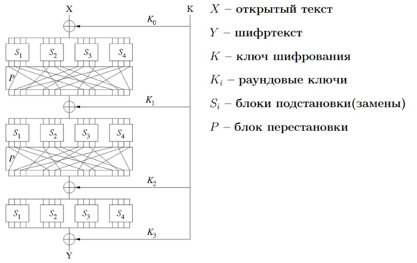

Историческая справка:
Threefish — симметричный блочный криптоалгоритм, разработанный группой специалистов во главе с автором Blowfish и Twofish, американским криптографом Брюсом Шнайером в 2008 году. Этот шифр использования в хеш-функции Skein и в качестве универсальной замены существующим блочным шифрам.
Основными принципами разработки шифра были: минимальное использование памяти, необходимая для использования в хеш-функции устойчивость к атакам, простота реализации и оптимизация под 64-разрядные процессоры.
В отличие от предыдущих разработок криптографа, построенный с использованием сети Фейстеля, в основе Threefish лежит SP-сеть - substitution-permutation, подстановочно-перестановочная сеть.
Данный метод основан на построении нескольких «слоев» преобразований шифруемого блока – чередующихся перестановок и замен, зависящих от ключа.
Возможно многократное использование пары «слоев» на основе раундовых ключей.
S-блок (от английского substitution box) замещает маленький блок входных бит на другой блок выходных бит. Эта замена должна быть взаимно однозначной, чтобы гарантировать обратимость. Назначение S-блока заключается в нелинейном преобразовании, что препятствует проведению линейного криптоанализа.
P-блок(от английского permutation box) — перестановка всех бит: блок получает на вход вывод S-блока, меняет местами все биты и подает результат S-блоку следующего раунда.
